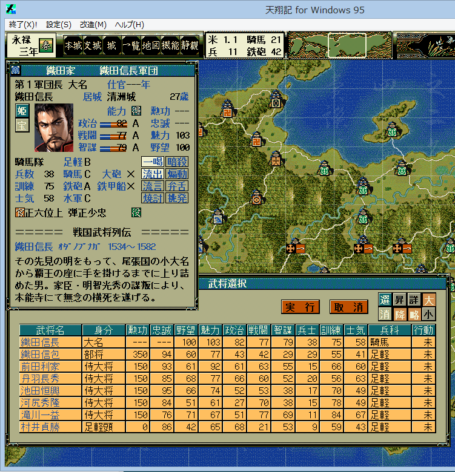

<dl>
    <dt>
    <div class="download_file">DOWNLOAD ⇒ <a href="%(file)s">天翔 小夏フォント</a>ファイル。</div>
    </dt>
    <dd>
    <div class="update_time">└更新日 %(year)04d/%(mon)02d/%(mday)02d</div>
    </dd>
</dl>

<h4>専用フォントへの切り替え</h4>
<ol>
    <li>インストール方法は、通常のフォントと同じです。｢天翔 小夏.ttf｣ファイルを｢C:\WINDOWS\Fonts｣フォルダにペーストすると、自動的にインストールされます。<br>
    <li>このフォントは｢<a href="http://www.masuseki.com/?u=be/konatu.htm#ccl">小夏</a>｣フォントをベースに、天翔記用に若干の修正をしたフォントとなります。
    <ul>
        ◎修正点<br>
        <li>半角数字について、全て右に１ピクセルずらした。<br>
    </ul>
    <li>その他の、解説は、<a href="?page=nobu_font_tsmincho">｢天翔 明朝｣の解説</a>と同じとなります。｢天翔 明朝｣を｢天飛 小夏｣と読み替えてください。
    <br><br>
    <li>全体に対するフォントの雰囲気は下記のようになります。<br><br>
    

    </ol>